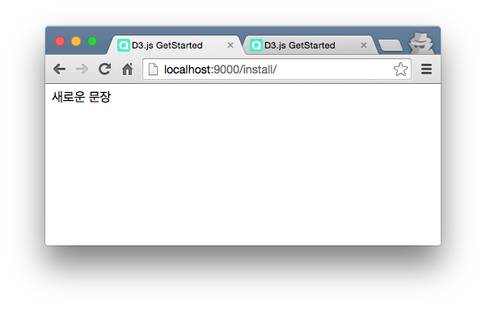
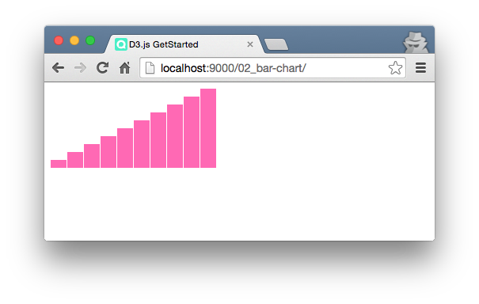
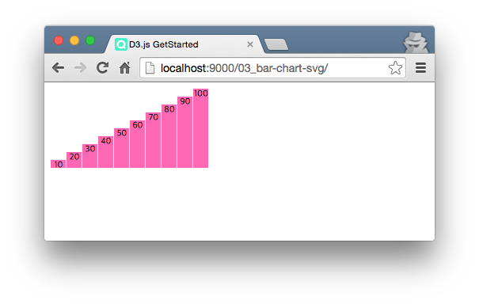

D3.js 시작하기
D3.js란?
오늘날 인터넷에는 헤아릴수 없는 양의 자료들이 있고 우리는 웹브라우져를 통해 그 공간을 들여다 볼 수 있습니다. 문자열을 통해 이메일을 확인하고 이미지로 사진을 공유할 수 있습니다. 특히 수치로 이뤄진 데이터를 그래프로 보여줄 때는 이미지 파일을 서버에서 제공하게 됩니다. 그러나 한번 만들어 놓은 그래프 이미지는 데이터가 변경될 때마다 변경해야 하는데 이는 매우 수고로운 작업입니다.
D3.js는 데이터와 이미지를 바인딩하는 라이브러리 입니다. 서버의 수치 데이터를 웹브라우져로 가져온 뒤 이를 브라우져 문서 요소로 변경하고 렌더링합니다. 그렇기 때문에 서버 데이터가 변경되면 웹브라우져는 변경된 요소를 반영하여 다시 그래프를 그리게 됩니다. 이렇게 D3.js를 이용하면 기존의 정적인 그래프를 데이터와 바인딩된 동적 그래프로 구현 할 수 있습니다. 이번 글에서는 D3.js의 설치 및 사용법에 대해 알아보도록 하겠습니다.
설치
깃헙 저장소에서 직접 소스파일을 다운로드 하거나 bower를 이용해 다운로드 할 수 있습니다.
bower install d3 --save
D3.js 소스파일을 다운로드 후 이를 indxe.html 문서에 로딩합니다.
<!DOCTYPE html>
<html>
<head>
<meta charset="utf-8">
<title>D3.js GetStarted</title>
<link rel="stylesheet" href="style.css"/>
</head>
<body>
<!-- D3.js 추가 -->
<script src="../bower_components/d3/d3.min.js"></script>
<script src="app.js"></script>
</body>
</html>
간단하게 라이브러리 로딩여부를 확인하기 위해 app.js에 스크립트를 작성합니다.
// app.js
d3.select("body").append("div").text("새로운 문장");
웹 브라우져에서 아래 페이지를 확인할 수 있으면 D3.js 라이브러리를 제대로 설치한 것입니다.

사용법
D3.js는 제이쿼리 사용법과 매우 유사합니다. 설치시 사용한 스크립트를 다시 확인해 봅시다.
// app.js
d3.select('body').append('div').text('새로운 문장');
body 요소를 선택하고 div 요소를 추가한뒤 "새로운 문장"이라는 문자열을 삽입했습니다.
제이쿼리와 유사하게 D3.js는 돔(DOM)을 제어 할 수 있고 함수 체이닝을 사용합니다.
가장 많이 사용하는 그래프 중 하나인 막대 그래프를 그려 봅시다. 그래프를 그리기 위해서는 먼저 데이터가 있어야 합니다. 보통은 서버에 데이터를 요청하지만 본 글에서는 편의를 위해 자바스크립트 변수에 데이터를 할당하여 진행하겠습니다.
// app.js
var data = [10, 20, 30, 40, 50, 60, 70, 80, 90, 100];
이 데이터를 돔으로 만들기 위해서 D3.js는 selectAll(), data(), ennter() 함수를
제공합니다.
// app.js
d3.select("body").selectAll("div")
.data(data)
.enter()
.append("div");
d3.select("body") 로 index.html에 선언한 body 문서 요소를 선택합니다.
그리고 selectAll("div") 를 호출합니다. 그러나 index.html에는 body만 선언했을뿐 div는
어디에서 선언하지 않았습니다. 미선언된 문서요소를 선택하는 것이 불편하게 여겨질 수도 있지만 D3.js
에서는 이렇게 사용합니다. 이것을 "가상의 문서요소"라고 하겠습니다. 가상의 문서요소에 우리가 정의한
데이터를 바인딩한는 것이 data(data) 함수 입니다. enter() 함수는 data 배열의 각 요소를
순회하면서 가상의 문서요소 디비전(div) 10개를 만들 것입니다. 마지막으로 append("div") 함수를
통해 가상의 문서요소를 body 문서 하위로 추가합니다.
화면에는 아무런 변화가 없지만 개발자 도구로 살펴보면 문서 요소가 추가되었음을 확인할 수 있습니다.

막대 그래프
D3.js가 데이터를 기반으로 돔을 생성한다는 사실을 확인했습니다. 막대 그래프를 그리기 위해서 추가된
문서요소를 조작한다면 가능할 것 같습니다. D3.js의 style() 함수는 문서 요소의 스타일 속성을
변경할 수 있습니다. style() 함수를 이용해 각 막대의 높이(height)를 설정합니다.
// app.js
.style("height", function (d) { // 높이 설정
return d + "px";
});
style() 의 첫 번째 파라매터는 스타일 속성 이름을 설정합니다. 두번째 파라매터인 콜백함수가
중요합니다. 이것은 enter()를 통해 생성된 각 문서요소를 반환하는 콜백함수 입니다. 우리는 이
콜백함수의 파라매터인 d 변수를 이용해 실제 데이터에 접근할 수 있습니다. d + "px" 즉 데이터
크기를 픽셀 단위로하여 높이값를 반환합니다. 너비를 위한 코드도 비슷하게 작성합니다.
// app.js
.style("width", function (d) { // 너비 설정
return "20px";
});
D3.js의 attr() 함수는 문서요소의 속성을 설정할 때 사용합니다. div로 만들어진 막대를 출력하기
위한 스타일시트 클래스를 정의하고 각 문서 요소에 적용합니다.
/* style.css */
.bar-chart {
display: inline-block;
margin-right: 1px;
background-color: hotpink;
}
// app.js
.attr("class", "bar-chart");

SVG
HTML에서 그림을 그리기 위해서는 디비전보다 SVG가 더 적합합니다. SVG는 이차원 백터 이미지를 그리기 위한 웹 표준입니다. D3.js에서 SVG를 사용하면 좀더 세밀하게 그래프를 그릴 수 있습니다.
지금까지 디비전으로 구현한 막대그래프를 SVG로 변경해 보겠습니다. body에 너비 200px,
높이 100px인 svg 문서 요소를 추가하고 svg변수에 할당합니다. 향후 svg 변수를 이용해
데이터를 바인딩할 것입니다.
// app.js
var w = 200, h = 100;
var svg = d3.select("body")
.append("svg")
.attr("width", w)
.attr("height", h);
개발자 도구로 살펴보면 width="200" height="100"인 SVG 문서 요소가 추가 된것을 확인할 수 있습니다.

막대그래프 섹션과 마찬가지로 selectAll("rect")로 가상의 문서요소를 선택하고 data(data)로
데이터 배열과 문서 요소를 바인딩 후 enter()를 이용해 문서요소를 생성합니다. 그리고
append("rect") 함수로 svg 엘레멘트 하위 요소로 가상의 문서요소를 추가합니다.
// app.js
svg.selectAll("rect")
.data(data)
.enter()
.append("rect")
개발자 도구로 살펴보면 rect 문서요소가 데이터 배열의 길이만큼 생성된 것을 확인할 수 있습니다.

이제 막대그래프 각 막대의 높이와 너비, 위치, 색상을 설정해 보겠습니다.
// app.js
svg.attr("x", function(d, i) { // x 좌표 설정
return i * (w / data.length)
})
.attr("y", function(d) { // y 좌표 설정
return h - d;
})
.attr("width", w / data.length - 1) // 너비 설정
.attr("height", function(d) { // 높이 설정
return d;
})
.attr("fill", function(d) { // 색상 설정
return "hotpink";
});
DIV를 사용한것과는 달리 SVG 요소는 x, y 좌표값을 설정해야 합니다. 간단한 계산식으로 좌표를
설정합니다. 브라우져 좌측 상단이 0,0 좌표이기 때문에 y 좌표는 값이 늘어남에 따라 브라우져 아래를
가리킵니다. 그렇기 때문에 y 좌표 설정시 전체 높이에서 데이터를 뺀 값을 사용합니다. 너비는 그래프 전체
너비를 데이터 갯수로 나누고 간격을 위해 1픽셀을 뺍니다. 그리고 색상은 SVG 속성중 fill을
사용하여 설정합니다.

레이블
svg를 계속 활용해서 막대 끝에 레이블을 추가해 보겠습니다. svg 하위에 rect를 추가한 것 처럼
text를 추가하여 레이블을 표시할 수 있습니다.
// app.js
svg.selectAll("text")
.data(data)
.enter()
.append("text")
.text(function(d) {
return d;
})
.attr("x", function(d, i) {
return i * (w / data.length) + (w / data.length) / 2;
})
.attr("y", function(d) {
return h - d + 10;
})
.attr("font-family", "sans-serif")
.attr("font-size", "11px")
.attr("fill", "black")
.attr("text-anchor", "middle");
레이블 문자열을 그래프 안에 제대로 넣기 위해서는 x, y 좌표 설정에 조심해야 합니다. x 좌표를 각
막대의 가운데 좌표에 지정한 뒤 text-anchor="middle 속성을 추가하여 정확히 가운데로 위치
시켰습니다. y 좌표는 각 막대 맨꼭대기 위치에서 10px를 내려 정확히 막대 안으로 들어오도록
하였습니다.

결론
본글에서는 D3.js를 설치하여 막대 그래프를 구현하면서 그 개념과 사용법에 대해 알아보았습니다. 이 뿐만아니라 아래 D3.js 항목들도 추가로 공부해야할 것입니다.
- 척도(Scales)와 축(Axes)
- 선 그래프, 분산 그래프
- 트랜지션(Transition)
- 레이아웃(Layout)